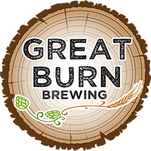

Visit Great Burn Brewing's Website
Great Burn Brewing is a brewery and taproom located on the south-side of Missoula, Montana. For your enjoyment, we brew hand-crafted ales and one hard seltzer on a small batch system (10 Barrel). Our taproom has a comfortable pub-like atmosphere with a relaxing and friendly environment. We love brewing hop-centric or West Coast style beers that are well balanced and flavorful. We also offer an amazing variety of all types of craft beer flavors ranging from barrel-aged stouts to sour beers and everything in-between. Check out our beer menu for the most current beer list and the 12-tap handle’s we currently offer. Eight of these handles are dedicated to rotating specialty or seasonal brews
Buy A Physical MT Brewery Passport Today!
Tap the Map to Go Back